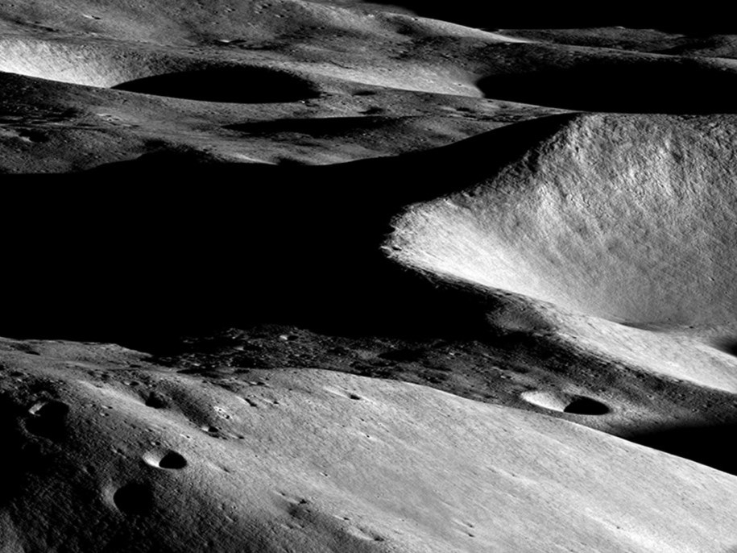
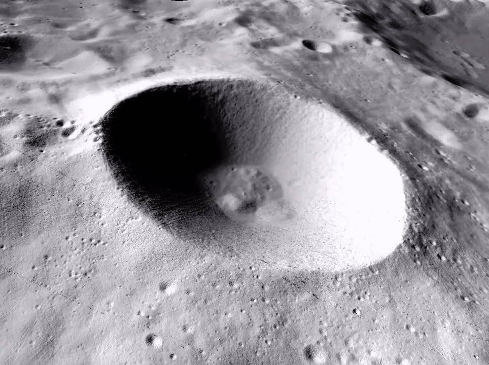
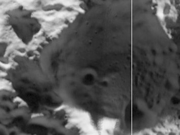

Кратер Малаперт

Диаметр: ~72 км
Глубина: ~2.7 км
Преимущества:
- Почти постоянный солнечный свет (80% времени) — идеально для энергоснабжения.
- Удобное расположение для связи с Землёй.
- Ровные участки для безопасной посадки.
Недостатки:
- Меньше запасов льда, чем в других кратерах.
- Сильные перепады температур.
Кратер Шеклтон

Диаметр: ~21 км
Глубина: ~4.2 км
Преимущества:
- Богатые залежи водяного льда (ключевой ресурс для базы).
- Вал кратера почти всегда освещён — энергия + доступ к льду.
- Один из наиболее изученных и перспективных кратеров для первой лунной базы.
Недостатки:
- Крутые склоны усложняют строительство.
- Экстремально низкие температуры в тени (–250°C).
Кратер Хауорт

Диаметр: ~51 км
Глубина: ~2.4 км
Преимущества:
- Значительные запасы льда, как в Шеклтоне.
- Более пологие склоны — проще добывать ресурсы.
- Возможность создать сеть баз с соседними кратерами.
Недостатки:
- Меньше освещённых зон для солнечных панелей.
- Требует дополнительной разведки.